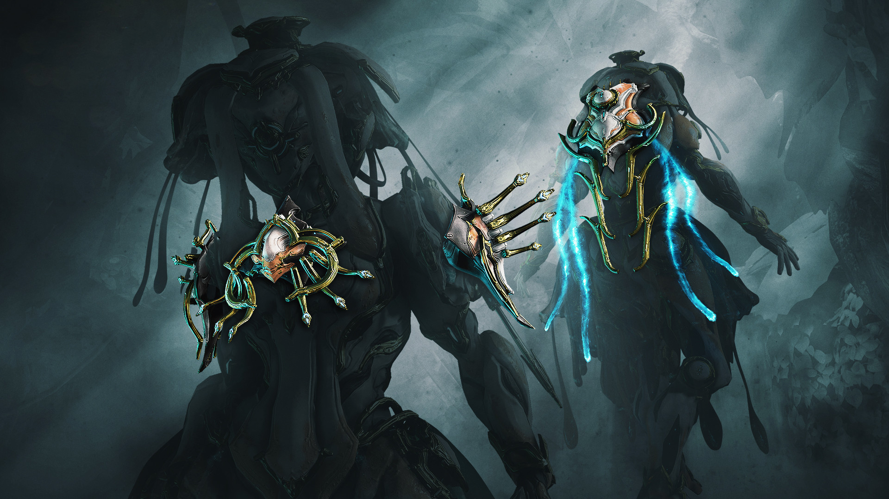

GameplayWarframe is an online action game that includes elements of shooters, RPG and stealth games. The player creates their Tenno character, which includes a basic armor unit called a "Warframe" which provides the player with special abilities, basic weapons such as a melee weapon, primary, sidearm(s), and a ship. Through the ship's console, the player can select any of the available missions to them. A main storyline set of missions requires players to complete certain missions across planets and moons in the solar system, to be able to access relays that they can progress to other planets or locations. Other missions rotate over time as part of the game's living universe; these can include missions with special rewards and community challenges to allow all players to reap benefits if they are successfully met. Aboard the ship, the player can also manage all other functions for their Tenno, including managing their arsenal of equipment, customizing their Warframe and weapons, crafting new equipment, and access the in-game store. Missions can be played alone or with up to four players in a player versus environment cooperative manner. Each mission is given a ranking that indicates how difficult the mission is. Missions are generally played on randomly generated maps composed of "tiles" of map sections. Missions have various objectives, such as defeating a certain number of enemies, collecting data from terminals without activating alarms, rescuing prisoners, or defending points on the map for set periods of time. Newer updates have added space-bound combat using Archwings, space equipment which come with a new set of abilities and weapons, and a large open-field environment where numerous bounties can be completed. Players can use their weapons, special abilities, and a number of parkour style moves to navigate through and overpower forces within these missions. Downed players may choose to revive themselves up to a maximum of six times, or can be revived by other players an infinite number of times. Once complete, players are rewarded with in-game items, as well as in-game currency and items picked up while exploring the map; failure to complete a mission causes these rewards to be lost. In addition to cooperative missions, the game includes player versus player (PvP) content through the multiplayer "Conclave", which also rewards the player for placing high in such matches. Players and their equipment also gain experience and level up from missions; equipment with higher levels can do more damage and support more "mods", special cards that can be slotted into the equipment to change its attributes or provide passive bonuses and abilities. Mods are dropped by enemies during missions and may be part of the rewards, and are generally given out following a rarity distribution, with more powerful mods being more elusive to acquire. Alongside mods, players have other means of improving their equipment, including conditional upgrades called Arcane Enhancements and Riven Mods, weapon-exclusive mods whose weapon, buffs and stats are determined upon unlocking. Another type of reward is equipment blueprints, which can be used to construct new Warframe parts or weapons; blueprints and their resulting equipment may also be purchased directly using in-game money called Platinum. Players need to have specific quantities of construction materials (found from missions and their rewards) to build these items. Warframe is designed to be free-to-play, and has avoided using any pay to win elements; all Warframes, weapons, and other equipment is possible to acquire in-game over time through grinding, though monetization can simplify the process.[2] New weapons, Warframes, equipment, blueprints to construct such equipment and cosmetics like skins and capes (called Syandanas) can be purchased in the market, using either Credits, which are earned in-game, or Platinum, a premium currency that can be traded for with other players for rare items in-game or be purchased via microtransactions. Platinum is also required to purchase additional enhancements, such as arsenal slots for Warframes and weapons, as well as items that enhance the mod capacity of gear.[3] Though, there are some cosmetic items that can only be obtained through in-game payments. Late in 2019 an update named Empyrean was introduced to the game letting players pilot and manage a space ship called a Railjack. This was designed as a co-op experience with up to four people working together, doing different jobs to keep the ship operational while destroying enemy ships. In early 2020 a new Intrinsic is going to be released called Command which will make solo play more accessible. |